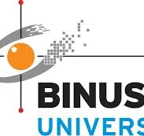

Curriculum Vitae
Profile
- 🎓📚 Data Scientist with 24 years of teaching & research experience in driving data-informed decisions and solutions to boost efficiency and accuracy.
- 📊🔍 Skilled in developing statistical models, predictive analytics, and interpreting complex data using machine learning algorithms to generate actionable insights.
- 💻📦 Proficient in creating R packages and custom software for statistical analysis and machine learning applications.
Professional Experience

School of Mathematical & Statistical Sciences, Clemson University, Clemson, South Carolina, USA
Full Professor 2022 – Present
Associate Professor 2017 – 2022
Assistant Professor 2012 – 2017

Department of Mathematical Statistics, BINUS University, Jakarta, Indonesia
Visiting Professor 2017 – 2019
BioRealm, Los Angeles, California, USA
Consultant 2016 – Present
Department of Statistics, University of South Carolina, Columbia, South Carolina, USA
Research Assistant 2009 – 2012
Teaching Assistant 2008 – 2009, Summer 2010, Summer 2011
Department of Mathematics, Western Kentucky University, Bowling Green, Kentucky, USA
Teaching Assistant 2006 – 2008
Education
University of South Carolina, Columbia, South Carolina, USA
Ph.D. in Statistics 2008 – 2012
- GPA: 4.0/4.0
- Dissertation advisor: Joshua M. Tebbs
Western Kentucky University, Bowling Green, Kentucky, USA
M.S. in Mathematics 2006 – 2008
- GPA: 4.0/4.0
- Thesis advisor: Ferhan Atici
Austin Peay State University, Clarksville, Tennessee, USA
B.S. in Mathematics 1999 – 2006
- GPA: 3.8/4.0
- Graduated Magna Cum Laude
Research Interests
🔬 Research Areas
📐 Methodological Statistics
- 🗂️ Categorical Data Analysis
- 🧪 Group Testing
- ⏳ Survival Data Analysis
- 📉 Nonparametric Methods
- 📏 Measurement Error Models
- 🗺️ Spatio-Temporal Modeling
- 📊 High-Dimensional Regression
- 🎯 Bayesian (Para/Nonpara) Estimation
💻 Statistical Computing
- ⚙️ Statistical Computing
- 🤖 Machine Learning
🏥 Applied Domains
- 🦠 Epidemiology & Public Health
- 🧬 Biomedical Applications
Honors & Awards
🏆 Major Recognitions
- 🏅 Fellow of the American Statistical Association, 2022–present
- 🎓 College of Science Dean’s Associate Professor, 2021–2023
- 🏆 Faculty of the Game, Clemson University, 2021
- 🦸 Nominee COVID-19 Data Hero Award, 2021 (DataHeroAwards.org)
- 📊 ASA Statistical Significance Poster Award, 2019
- 🏅 ASA Outstanding Statistical Application Award, 2018 & 2014
- 📝 Best Paper in Biometrics by an IBS Member, 2017
🎖️ Academic Excellence Awards
- 👨🏫 Outstanding Service to Graduate Students Award, 2014
- 🌟 Citizenship Award, Department of Statistics, University of South Carolina, 2012
- 🗣️ SC-ASA Best Presentation Award, 2012
- 🎓 Dean’s Award for Excellence in Graduate Study, University of South Carolina, 2012
- 📚 Outstanding Graduate Student Award, Breakthrough magazine, 2012
- 📑 ENAR Distinguished Student Paper Award, 2011
🧑🎓 Graduate Achievements
- 🎖️ James D. Lynch Graduate Research Award, 2011
- ✈️ Multiple Travel Grants (2010–2011):
- Department of Statistics
- Graduate School
- College of Arts & Sciences
- Department of Statistics
- 🏆 Outstanding Graduate Student in Academics, 2010
- 🌱 Outstanding First-Year Student, 2009
🏛️ Early Career Distinctions
- 🧮 Mathematics Graduate Student of the Year, Western Kentucky University, 2008
- 💰 Dr. Glenn Powers Scholarship, 2007
- 🥈 Finalist, Drane Award, Austin Peay State University, 2005
- 🎓 Multiple Undergraduate Scholarships:
- Kappa Sigma Endowment Fund (2002–2003)
- United States Navy Scholarship (2000)
- Presidential Academic Honors Scholarship (2000)
- Kappa Sigma Endowment Fund (2002–2003)
Sponsored Research
🦠 Disease Modeling & Public Health
🌡️ DMA-PRIME
Disease Modeling and Analytics for Outbreak Preparedness
Centers for Disease Control and Prevention | Co-PI
$17,231,774 | 2023-2028🦟 Vector-Borne Disease Surveillance Models (R01 AI179840-01)
National Institutes of Health | Co-PI
$3,719,295 | 2023-2028🏥 COVID-19 Modeling Framework (R01 LM014193)
Surveillance and Resource Allocation
National Institutes of Health | Co-PI
$3,092,665 | 2023-2027
🤖 AI & Computational Modeling
🦾 High-Performance Pistons Research
Bayesian/Machine Learning Approaches
Army VIPR-GS Center | Co-PI
$769,092 | 2023-2024🧠 AI Cancer Drug Sensitivity Prediction
Clemson-MUSC AI Hub | Co-PI
$25,000 | 2022-2023⚡ GPU-Accelerated Mathematical Optimization
Office of Naval Research | Co-PI
$316,000 | 2019
🌱 Agricultural & Biological Research
🌾 Sorghum Metabolome Research
Clemson SUCCEEDS Program | Co-PI
$25,000 | 2022-2023🧬 Genome-to-Phenome Mapping (OIA-1826715)
National Science Foundation | Co-PI
$5,999,995 | 2018-2022🌾 Rice Production Climate Resistance
Biorealm | PI
$21,494 | 2016
🐾 Veterinary & Parasite Research
🐕 Canine Vector-Borne Disease Forecasting
Companion Animal Parasite Council | PI/Co-PI
$77,782–$51,327 | 2015-2019🧪 Group Testing for Infectious Diseases (R01-AI121351)
National Institutes of Health | Co-PI
$2,164,953 | 2021-2026
$1,128,863 | 2016-2019
🎓 Education & Training
- 📚 PROACTIVE NRT Program (DGE-1633608)
Interdisciplinary Venture-Based Education
National Science Foundation | Co-PI
$2,989,899 | 2016-2021
Publications
📚 Publications can be accessed here.
📦 Software/Packages
Software can be accessed 👉 here.
Blogs
Read insights, tutorials, and updates here.
Presentations & Workshops
Access slides and workshop materials here.
Teaching
View course materials and teaching philosophy here.